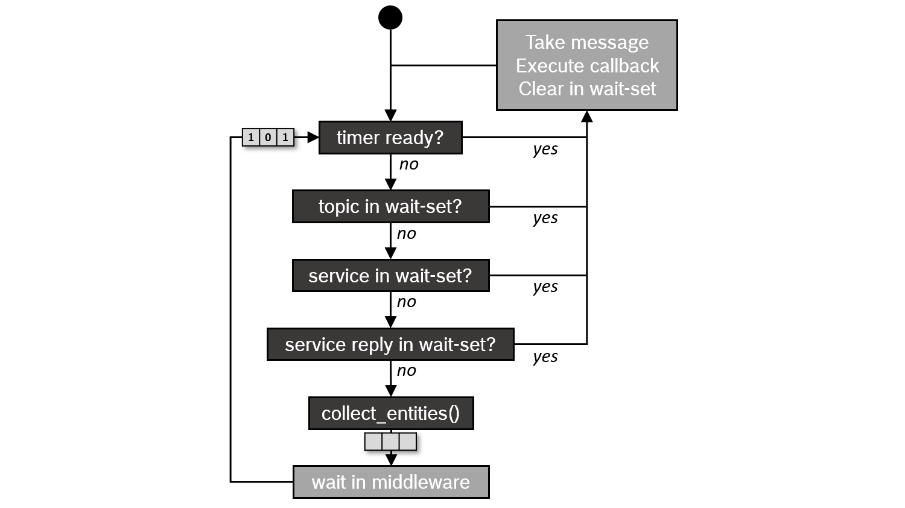

执行器 [6909]
概述 [6823]
ROS 2 中的执行管理是通过执行器（Executors）的概念来解释的。执行器使用底层操作系统的一个或多个线程来调用订阅、定时器、服务服务器、动作服务器等的回调函数，以处理传入的消息和事件。显式的执行器类（在 rclcpp 的 executor.hpp，在 rclpy 的 executors.py，或者在 rclc 的 executor.h 中）比 ROS 1 中的 spin 机制提供了更多的执行管理控制，尽管基本的 API 非常相似。 [6910]
接下来，我们将重点介绍 C++ 客户端库 rclcpp。 [6911]
基本用法 [6912]
在最简单的情况下，可以通过调用 rclcpp::spin(..) 来使用主线程处理节点的传入消息和事件，示例如下： [6913]
int main(int argc, char* argv[])
{
// Some initialization.
rclcpp::init(argc, argv);
...
// Instantiate a node.
rclcpp::Node::SharedPtr node = ...
// Run the executor.
rclcpp::spin(node);
// Shutdown and exit.
...
return 0;
}
对 spin(node) 的调用基本上扩展为单线程执行器的实例化和调用，这是最简单的执行器： [6914]
rclcpp::executors::SingleThreadedExecutor executor;
executor.add_node(node);
executor.spin();
通过调用执行器实例的 spin()，当前线程开始查询 rcl 和中间件层的传入消息和其他事件，并调用相应的回调函数，直到节点关闭。为了不影响中间件的 QoS 设置，在客户端库层不会将传入消息存储在队列中，而是在中间件中保持，直到由回调函数进行处理。（这是与 ROS 1 的一个重要区别。）一个 等待集 用于通知执行器中间件层上可用的消息，每个队列对应一个二进制标志。等待集 还用于检测计时器到期的情况。 [6915]

执行器的类型 [6917]
目前，rclcpp 提供了三种执行器类型，它们派生自一个共享的父类： [6918]
![digraph Flatland {
Executor -> SingleThreadedExecutor [dir = back, arrowtail = empty];
Executor -> MultiThreadedExecutor [dir = back, arrowtail = empty];
Executor -> StaticSingleThreadedExecutor [dir = back, arrowtail = empty];
Executor [shape=polygon,sides=4];
SingleThreadedExecutor [shape=polygon,sides=4];
MultiThreadedExecutor [shape=polygon,sides=4];
StaticSingleThreadedExecutor [shape=polygon,sides=4];
}](../_images/graphviz-c1160194dae16051e00be2abef23d0fce5e7c347.png)
The Multi-Threaded Executor creates a configurable number of threads to allow for processing multiple messages or events in parallel. The Static Single-Threaded Executor optimizes the runtime costs for scanning the structure of a node in terms of subscriptions, timers, service servers, action servers, etc. It performs this scan only once when the node is added, while the other two executors regularly scan for such changes. Therefore, the Static Single-Threaded Executor should be used only with nodes that create all subscriptions, timers, etc. during initialization.
通过为每个节点调用``add_node（..）``，可以使用所有三个执行者与多个节点一起使用。 [6920]
rclcpp::Node::SharedPtr node1 = ...
rclcpp::Node::SharedPtr node2 = ...
rclcpp::Node::SharedPtr node3 = ...
rclcpp::executors::StaticSingleThreadedExecutor executor;
executor.add_node(node1);
executor.add_node(node2);
executor.add_node(node3);
executor.spin();
在上面的示例中，使用一个静态单线程执行者的一个线程来同时服务三个节点。在多线程执行者的情况下，实际并行性取决于回调组。 [6921]
回调组 [6922]
ROS 2允许将节点的回调组织成组。在rclcpp中，可以通过Node类的``create_callback_group``函数创建这样一个*回调组*。在rclpy中，可以通过调用特定回调组类型的构造函数来完成相同的操作。回调组必须在节点的执行过程中保留（例如，作为类成员），否则执行者将无法触发回调。然后，在创建订阅、定时器等时可以指定此回调组-例如，通过订阅选项： [6923]
my_callback_group = create_callback_group(rclcpp::CallbackGroupType::MutuallyExclusive);
rclcpp::SubscriptionOptions options;
options.callback_group = my_callback_group;
my_subscription = create_subscription<Int32>("/topic", rclcpp::SensorDataQoS(),
callback, options);
my_callback_group = MutuallyExclusiveCallbackGroup()
my_subscription = self.create_subscription(Int32, "/topic", self.callback, qos_profile=1,
callback_group=my_callback_group)
所有没有指定回调组的订阅、定时器等都被分配到*默认回调组*。可以通过``NodeBaseInterface::get_default_callback_group()``（在rclcpp中）和``Node.default_callback_group``（在rclpy中）查询默认回调组。 [6926]
有两种类型的回调组，类型必须在实例化时指定： [6927]
不同回调组的回调可以并行执行。多线程执行器（Multi-Threaded Executor）使用线程池根据这些条件并行处理尽可能多的回调。有关如何高效使用回调组的提示，请参阅:doc:使用回调组。 [6930]
在rclcpp中，Executor基类还具有函数``add_callback_group(..)``，可以将回调组分配给不同的执行器。通过使用操作系统调度器配置底层线程，可以使特定的回调优先于其他回调。例如，可以将控制循环的订阅和定时器优先于节点的所有其他订阅和标准服务。examples_rclcpp_cbg_executor package 提供了该机制的演示。 [6931]
调度语义 [6932]
如果回调函数的处理时间短于消息和事件发生的周期，执行器基本上按照先进先出（FIFO）的顺序处理它们。然而，如果某些回调函数的处理时间较长，消息和事件将在堆栈的较低层次上排队。等待集机制对这些队列向执行器仅报告了非常少的信息。具体而言，它只报告某个主题是否有任何消息。执行器使用这些信息以循环轮询的方式处理消息（包括服务和动作），而不是按照先进先出的顺序。下面的流程图可视化了这种调度语义。 [6933]
这种语义首次在2019年的ECRTS会议上由Casini等人在一篇论文中描述。 [链接](https://drops.dagstuhl.de/opus/volltexte/2019/10743/pdf/LIPIcs-ECRTS-2019-6.pdf) （注意：该论文还解释了计时器事件优先于所有其他消息的优先级，这个优先级在 Eloquent 中被移除了。 [链接](https://github.com/ros2/rclcpp/pull/841) ） [6934]
展望 [6935]
虽然rclcpp的三个执行器在大多数应用中运行良好，但存在一些问题，使它们不适用于实时应用程序，实时应用程序需要定义明确的执行时间、确定性和对执行顺序的自定义控制。以下是其中一些问题的摘要： [6936]
复杂和混合的调度语义。理想情况下，您希望有明确定义的调度语义以进行形式化的定时分析。 [6937]
回调函数可能会受到优先级反转的影响。较高优先级的回调函数可能会被较低优先级的回调函数阻塞。 [6938]
无法明确控制回调函数的执行顺序。 [6939]
没有内置的机制来触发特定主题的回调函数。 [6940]
此外，执行器在CPU和内存使用方面的开销相当大。静态单线程执行器大大减少了这种开销，但对于某些应用程序可能还不够。 [6941]
这些问题已经部分得到以下改进的解决： [6942]
rclcpp WaitSet ：rclcpp 的
WaitSet类允许直接等待订阅、定时器、服务服务器、动作服务器等，而无需使用执行器。它可以用于实现确定性的、用户定义的处理序列，可能同时处理来自不同订阅的多个消息。 examples_rclcpp_wait_set package 提供了使用此用户级等待集机制的多个示例。 [6943]rclc Executor：这个来自C客户端库*rclc*的Executor是为micro-ROS开发的，它可以让用户对回调的执行顺序进行细粒度控制，并允许自定义触发条件来激活回调。此外，它实现了逻辑执行时间（LET）语义的概念。" [6944]
更多信息" [6945]
Michael Pöhnl等人："ROS 2 Executor: How to make it efficient, real-time and deterministic?". ROS World 2021的研讨会。虚拟活动。2021年10月19日。" [6946]
Ralph Lange："Advanced Execution Management with ROS 2". ROS Industrial Conference。虚拟活动。2020年12月16日。" [6947]
Daniel Casini，Tobias Blass，Ingo Lütkebohle和Björn Brandenburg：“Response-Time Analysis of ROS 2 Processing Chains under Reservation-Based Scheduling”，第31届ECRTS 2019会议论文集，德国斯图加特，2019年7月。" [6948]